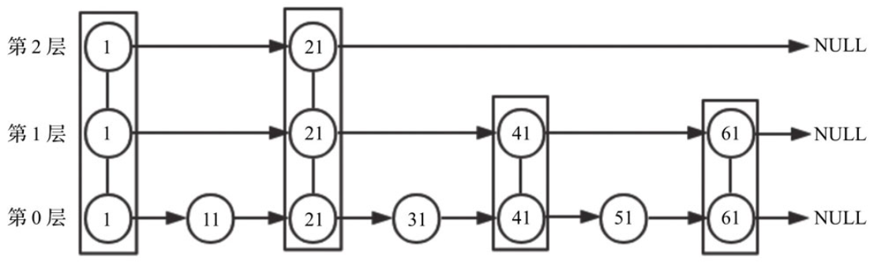
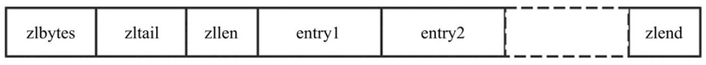
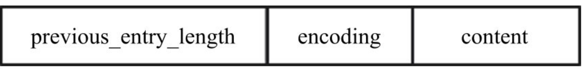
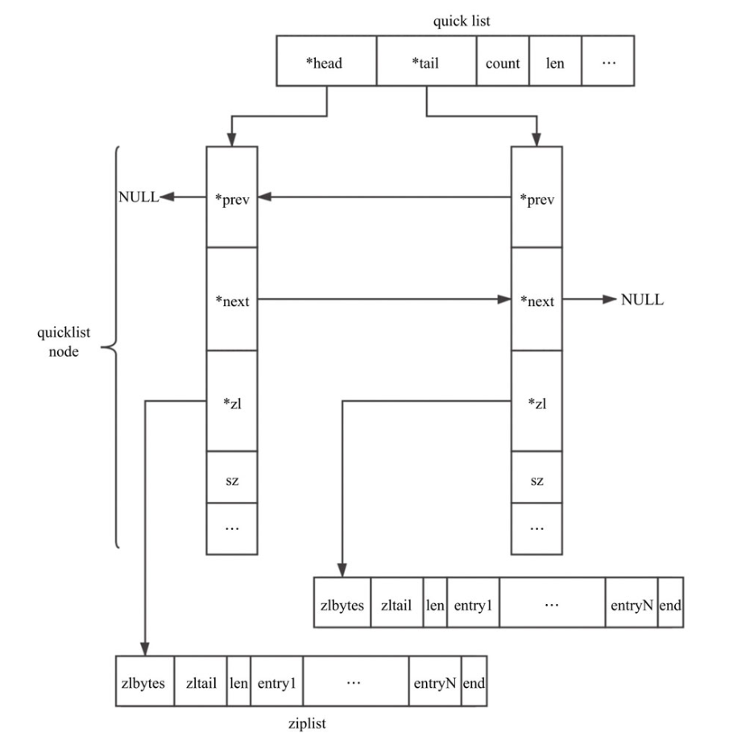
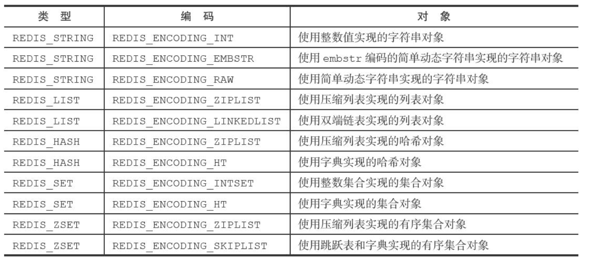

Redis核心原理与实战(3) 底层实现
1. 字符串
Redis 中的字符串采用简单动态字符串（Simple Dynamic String，SDS），实现如下。
1 | struct sdshdr { |
SDS 相比 C 字符串的优势：
- 计数方式不同，C 字符串获取长度时间复杂度 O(n)，sdshdr 为 O(1)
- 杜绝了缓冲区溢出，进行自动扩容
- 空间预分配和惰性空间释放
- 空间预分配：对 sdshdr 拓展时，会分配多余的 free空间 + 1 byte，其余 1 byte 用于存空字符
- 惰性空间释放：sdshdr 缩减后，不会立即回收多余空间
- 二进制安全，对于二进制文件中存在 ‘\0’ , C 字符串会截断，sdshdr 则不存在这个问题。
- sdshdr 兼容 string.h 的某些操作，并且支持二进制格式
2. 链表
Redis 采用双向链表实现 List。
1 | typedef struct listNode { |
3. 字典
Redis 会保存一个全局字典记录 key-value 映射，采用哈希表实现。

3.1 字典实现
字典底层采用哈希表实现，使用拉链法解决哈希冲突。
1 | typedef struct dict { |
字典中保存了两个哈希表和一个下标 rehashidx 用以实现 rehash，结构如下图所示。

3.2 rehash
rehash 的流程：
- 为 ht[1] 分配空间，ht[1] 的长度为 2 的幂
- 渐进 rehash：当用户执行增删改查时，定位其索引 rehashidx，将 ht[0] 对应的节点复制到 ht[1]，故 resash 操作被平摊到各个操作上。故在 rehash 过程中，用户的操作需要在 ht[0] 和 ht[1] 两个表进行（增加操作只在 ht[1] 进行，保证 ht[0] 只减不增），rehash 结束，rehashidx变为 -1
- 释放 ht[1]，将 ht[1] 设置为 ht[0]，ht[1] 创建一个空表，为下次 rehash 做准备
rehash 时机：
- 拓展
- 目前没有执行 BGSAVE 或 BGREWRITEAOF，且负载因子大于等于 1
- 目前正在执行 BGSAVE 或 BGREWRITEAOF，且负载因子大于等于 5 (BGSAVE/BGREWRITEAOF 采用 copy-on-write 机制，redis 提高了负载因子的上限，避免子进程运行期间哈希表进行扩容，减少不必要的内存写入）
- 收缩：负载因子小于 0.1
4. 跳跃表
跳跃表是 Redis 有序集合的基础，是多层有序链表。
传统的有序链表插入和查找的复杂度都为 O(n)，如果我们将有序链表的节点分层，每一层都是有序链表，在查找时从最高层开始查找，如果 next 节点大于要寻找的值或 next 为空，则到下一层查找，即可完成 O(logn) 的查找复杂度。跳表的具体实现不在此介绍，感兴趣的读者可以翻阅数据结构教材查看。

5. 压缩列表
压缩列表 ziplist 本质上是个字节数组，是 Redis 为了节约内存而设计的一种线性数据结构，Redis 的游戏集合、哈希和列表都使用了压缩列表。
ziplist 的结构如下图所示。

- zlbytes：压缩列表的字节长度
- zltail：压缩列表尾元素相对于压缩列表起始地址的偏移量
- zllen：压缩列表的元素个数
- entryX：压缩列表存储的元素，可以是字节数组或者整数，长度不限
- zlend：压缩列表的结尾标志符，恒为0xFF
根据上面的结构，我们很容易就可以得到压缩列表的字节长度、元素个数等，那么对于任意一个元素，如何判断其类型，以其元素的长度呢？
回答这些问题前，首先需要了解元素的结构，如下图所示。

- previous_entry_length：前一个元素的字节长度
- encoding：编码，当前元素的数据类型，整数或者字节数组
- content：数据内容
ziplist 遍历时从尾部开始遍历（通过 ztail 定位），根据 previous_entry_length 即可不断向前遍历，直到表头节点。
6. quicklist
低版本 Redis 的 List 使用 ziplist 和双向链表作为底层实现，在 3.2 版本引入 quicklist 综合考虑时间和空间效率。
quicklist 是一个双向链表， 链表中的每个节点都是一个 ziplist，结构如下图所示。

7. 整数集合
整数集合 intset 用于保存整数值的集合，可以保存 int16_t、int32_t、int64_t 的整数值。
1 | typedef struct intset { |
intset 的插入可能会触发升级
- 触发条件：添加的新元素超过当前类型能表示的范围（过大或者过小），则会触发升级
- 过程：根据新元素类型拓展数组，并转换原有元素，之后添加新元素（只会放在最后或者 0 号位置）
- 自动升级的优点：灵活，节省内存
8. 对象
上文陆续介绍了 Redis 使用到的主要数据结构和底层实现，但 Redis 并没有直接使用这些数据结构来实现，而是创建了一个对象系统，包含字符串、列表、哈希、集合和有序集合五种对象，主要有以下两个优点：
- Redis会根据场景为对象选择特定的数据结构，来优化效率
- 使用引用计数来实现统一的内存回收
Redis 的每个对象都由一个 redisObject 结构体组成，其代码如下：
1 | typedef struct redisObject { |
type：类型，string、list、hash、set、zset 中的一个
encoding：编码，即对象使用的数据结构
- ptr：对象的底层实现
- refcount：引用计数，为 0 时被回收
每种类型的对象都至少使用了两种不同的数据结构。
